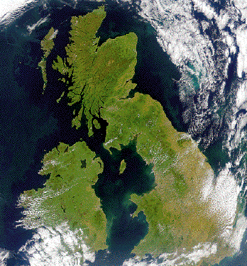

| Even a moment's reflection reveals a problem with the
standard approach: a smaller
measuring scale is sensitive to more details. |
| This is a real issue because many geological
features exhibit similar structure at finer detail.
That is, they are scale invariant,
at least for some range of scales. |
| This is reasonable because the forces that sculpt
coastlines operate in approximately the same way over a wide range of scales. |
| Nevertheless, surveyors measure the length of a coastline by |
| selecting a measuring scale d, |
| approximating the coastline by N line segments of length d, and |
| deducing the length of the coastline is L(d) = N⋅d. |
|
| Here is a picture from NASA's website. Click the picture to
see two polygonal approximations of the coastline. |
|  |
| If this picture does not convince you, click here for
another NASA photograph. |
| Imagine the difficulty of measuring the length of
this coastline, using smaller and smaller scales. |
| Evidently, a smaller measuring scale will detect more detail of the coastline, hence
give a greater length. |
| Self-similarity of coastlines casts doubt on the hope that these
measurements will converge as smaller scales are used. In fact, these doubts are
justified. |